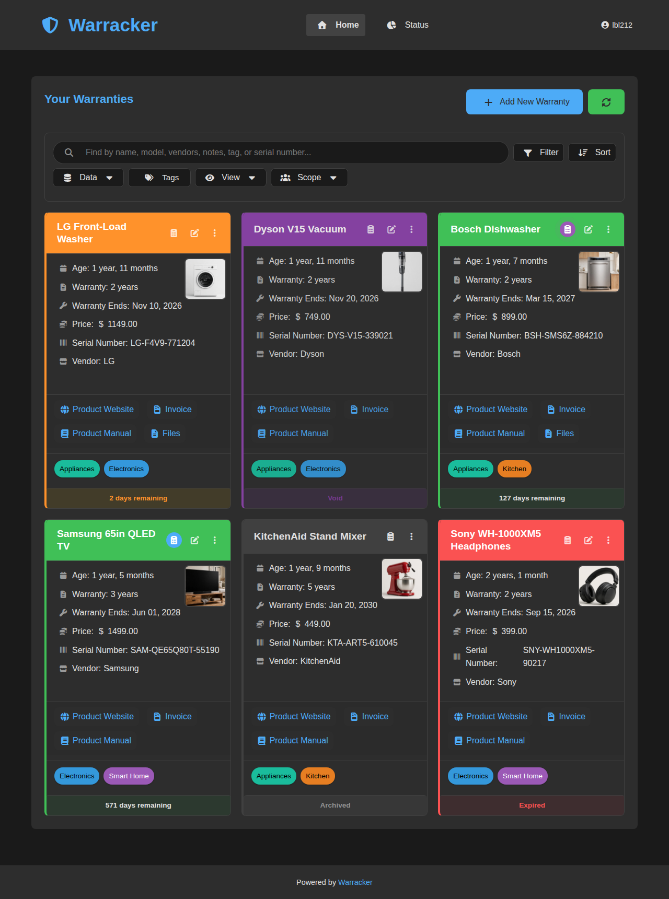

Never miss a warranty again.
Open-source warranty tracker for individuals and teams. Organize product warranties, monitor expiration dates, and store receipts and documents in one place. You own the data, your rules.

How it works
Three steps to never losing a claim
Add it once, and Warracker watches the dates for you.
Add your products
Warranties, purchase dates, serial numbers, and photos, all in one place.
Get reminded before expiry
Email or 100+ push services, one alert per threshold, never daily repeats.
File claims with proof attached
Receipts, invoices, and manuals stored with the warranty, ready when you need them.
Features
Everything your warranties need
The full feature set, free and open source, in the version you host yourself.
Centralized tracking
Every product warranty in one place, with purchase dates, durations, serial numbers, and photos.
Expiry alerts
Email or 100+ push services via Apprise. Each threshold notifies once, never daily repeats.
Documents
Receipts, invoices, and manuals stored securely, with Paperless-ngx integration.
Claims
Manage warranty claims end to end, with statuses, dates, resolutions, and attached documents.
Multi-user
Admin controls, OIDC single sign-on, and a global view for families and teams.
Status dashboard
Charts, totals in your currency, and CSV export of any filtered view.
Self-host
Self-host in minutes
Docker and Docker Compose are all you need. One-click installs exist for Unraid, Proxmox, and TrueNAS.
mkdir warracker && cd warracker
curl -O https://raw.githubusercontent.com/sassanix/Warracker/main/Docker/docker-compose.yml
curl -O https://raw.githubusercontent.com/sassanix/Warracker/main/Docker/.env.example
mv .env.example .env
# Fill in your .env values, then:
docker compose up -dThe self-hosted version stays complete and free under AGPL-3.0. Cloud will differ only by hosting, limits, and support, never by removing features from self-hosted.
Cloud
Warracker Cloud is coming
A hosted version for people who want Warracker without running a server.
Star Warracker on GitHub to follow along.
Enterprise
Warracker for teams and organizations
Enterprise support for teams running Warracker in production. Register your interest and we will email you when it opens.
- Priority support, direct from the maintainer
- Onboarding and upgrade help
- Security advisories, ahead of public disclosure
- SAML SSO, planned
- SCIM provisioning, planned
- SIEM export, planned
FAQ
Questions, answered
The things people ask before they self-host.
Is Warracker really free and open source?
Yes. Warracker is licensed under AGPL-3.0, and the code is public on GitHub. You can inspect it, contribute to it, and self-host it at no software cost.
Will the self-hosted version stay complete when Cloud launches?
Yes. Cloud will differ only by hosting, limits, and support. No features will be removed from the self-hosted version to make room for Cloud.
Do I need to pay anything to join the waitlist?
No. No payment is collected. The waitlist asks for your email only, and it is used for Cloud launch updates.
Can I move from self-hosted to Cloud later?
The migration path will be confirmed at launch. Your data stays exportable from the self-hosted version in the meantime.